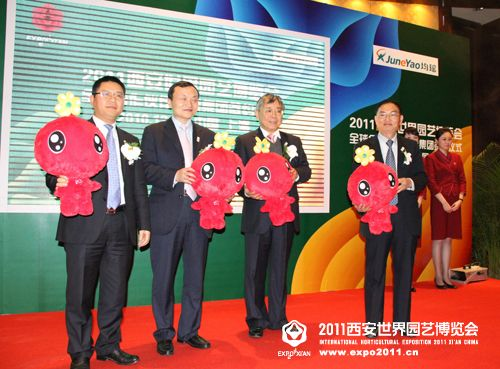
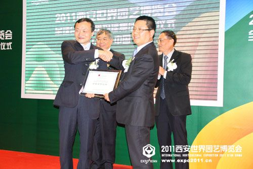
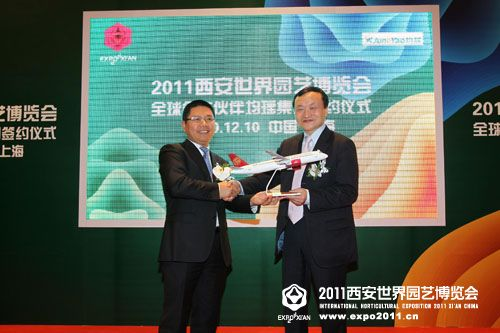

西安世园会与均瑶集团签约全球合作伙伴
-
12月10日，"2011西安世界园艺博览会全球合作伙伴均瑶集团签约仪式"在上海举行，均瑶集团正式成为2011西安世园会全球合作伙伴。
- 
-
上海市政协副主席、上海工商联主席王新奎，西安世园会执委会副主任，西安市委常委、宣传部长、浐灞生态区党工委书记王军，西安世园投资（集团）有限公司副总经理成斌，均瑶集团董事长王均金等出席了仪式。双方签订了全球合作伙伴合约，王军为全球合作伙伴均瑶集团授牌，并与王新奎、王均金共同启动西安世园会特许产品面市仪式。

为了更好地体现西安世园会"天人长安·创意自然"的主题，均瑶集团表示将更好地发挥自身在特许产品设计、生产、运营和管理等方面的经验和资源优势，开发创意新颖、品质优良、价格适中的西安世园会特许产品，在传递西安世园会"绿色引领时尚"理念的同时满足更多消费者的需求。此次签约后，均瑶集团将全面启动西安世园会特许产品的开发、生产。当日，西安世园会特许产品之一吉祥物 "长安花"的毛绒玩具在上海均瑶国际广场等上海特许经营网点首批销售。
-

作为世园会全球合作伙伴，均瑶集团还将携手世园会在西安、北京两地机场建立VIP接待室，充分发挥集团旗下吉祥航空的资源优势，更好地接待海内外参观西安世园会的游客。